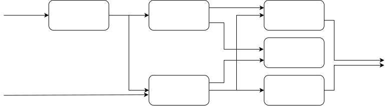

Introdução
Programar um computador consiste em comunicar ao computador instruções para que ele resolva problemas, e a comunicação entre duas entidades só é possível se usarem uma linguagem em comum, isto é, dominada por ambas as partes.
Comunicação1
Ação ou efeito de comunicar, de transmitir ou de receber ideias, conhecimento, mensagens etc., buscando compartilhar informações.
Embora este curso assuma que você já saiba programar em alguma linguagem, ou exatamente por isso, é importante que façamos uma revisão de algumas ideias básicas de programação antes de mergulharmos no paradigma funcional, para que possamos melhor posicionar este paradigma com em relação aos demais.
Linguagens
Quando humanos se comunicam, usam linguagens naturais, como o português, libras, ou cantonês. Linguagens naturais são cheias de nuances e dependências do contexto, o que lhes confere grande poder de expressão mas também leva a possibilidade de ambiguidade. Por isso, linguagens naturais não são boas para a comunicação entre computadores ou computadores e humanos, pois esta deve ser precisa. Isto ocorre a despeito do grande esforço dispendido e na evolução do processamento de linguagens naturais, como as "alexas" e "siris" do mundo podem provar.
A comunicação entre computadores é feita por um protocolo de comunicação, assunto para outro curso. Já a comunicação entre humanos e computadores, na programação do computador, é feita por meio de linguagens de programação, que são muito mais restritas que as linguagens naturais e, por isso, não ambíguas.
Linguagem de Programação2
A linguagem de programação é um método padronizado, formado por um conjunto de regras sintáticas e semânticas, de implementação de um código fonte - que pode ser compilado e transformado em um programa de computador, ou usado como script interpretado - que informará instruções de processamento ao computador.
A não ambiguidade das linguagens de programação vem do fato de terem sintaxe e semântica precisas, descritas por uma gramática também precisa.
Sintaxe
A sintaxe de uma linguagem descreve o que constitui um programa estruturalmente correto e é definida por uma gramática.
Semântica
O significado de um programa é definido por sua semântica, ou seja, por regras que definem como as instruções especificado devem ser interpretadas.
Serem precisas não quer dizer que as linguagens sejam simples, como demonstra claramente a seguinte imagem, um programa "hello world" na linguagem Piet.

Também não quer dizer que sejam limitadas. De fato, há milhares de linguagens de programação por aí, e contando, com diferentes características que as tornam mais ou menos apropriadas para resolver diferentes problemas.

Dado o grande número de linguagens, nada melhor que classificá-las em grandes famílias ou paradigmas de programação baseado em suas características mais relevantes.
Imperativo x Descritivo
Os primeiros "computadores" eram máquinas que computavam mecanicamente seus resultados. Os computadores de segunda geração, da qual destacamos o ENIAC (circa 1955), não tinham partes mecânicas, sendo programados por conexões elétricas de seus diversos componentes. A geração seguinte tinha computadores que interpretavam código escrito em uma linguagem de programação.
Imperativo x Descritivo
- Imperativo: como
- Descritivo: o quê
Estas primeiras linguagens eram todas imperativas, no sentido de que ditavam ao computador uma sequência de ações a serem executadas para se chegar a um resultado. Isto é, estas linguagens permitiam ao programador dizer como realizar uma computação.
Imperativo
- leia a linha 1 do arquivo
- separe a linha por espaços
- pegue a segunda parte da linha
- converta a parte para número
- se o número for maior que 15, escreva na tela
- leia a próxima linha do arquivo
- volte para o passo 2
Este paradigma tem suas raízes no modelo computacional clássico de von Neumann e na máquina de Turing.

Em contrapartida a este modelo, surgiram mais tarde linguagens declarativas, em que o programador diz o quê deve ser computado e o computador se encarrega de achar um "como" adequado.
Descritivo
- selecione todas as linhas do arquivo, em que a segunda parte da linha, interpretada como um número, é maior que 15, e imprima-os na tela.
Com uma análise rápida das linguagens mais conhecidas, você deve reconhecer a maior parte como imperativas, por exemplo, C, Java, e Python. Já dentre as linguagens declarativas, se destacam SQL, LINQ, e Prolog.
Ortogonalmente ao foco no "como X o quê", podemos nos focar em como as instruções são organizadas mais em um nível mais alto, de onde se destacam quatro paradigmas principais: procedimental, orientado a objetos, lógico e funcional.3
Procedimental
Linguagens que usam o paradigma procedimental organizam instruções em blocos, denominados procedimentos, de onde vem o nome, ou funções. A ideia é que o código seja modularizado para separar funcionalidades e torná-lo mais compreensível e manutenível. Cada função deve executar uma operação bem específica; funções associadas são colocadas em um mesmo arquivo; e arquivos associados são colocados em um mesmo namespace.
O código seguinte, em C, mostra a função main, ponto de entrada do programa e de onde a função printf, importada de stdio.h, é invocada.
#include <stdio.h>
int main() {
printf("Hello, World!");
return 0;
}
Além da linguagem C, outros exemplos óbvios deste paradigma são as linguagens Pascal, Fortran e Python. Contudo, mesmo linguagens como Java e C++ podem ser consideradas procedurais, uma vez que organizam a computação em métodos, que são nada mais que funções. Mas como métodos estão fortemente associados a classes e suas instâncias, os objetos, estas linguagens são melhor classificadas como orientadas a objetos.
Orientado a Objetos
Na orientação a objetos, o foco está não na execução passo a passo de funções, mas na organização de dados e funções associadas em objetos. Embora esta organização possa ser feita em qualquer linguagem estruturada, a sintaxe das linguagens orientadas a objeto facilita e torna mais natural este trabalho.
Dois conceitos básicos na orientação a objetos são as classes e os objetos. Classes são abstrações de tipos de coisas encontrados no mundo real, ou seja, receitas de estruturas de dados que definem quais informações devem ser considerados em conjunto para representar um objeto e quais as ações associadas a este objeto. Por exemplo, se no mundo real cachorros tem uma data de nascimento e um nome, e são capazes de latir, uma classe que represente cachorros pode ser definida assim em Java.
class Cachorro {
int diaNascimento;
int mesNascimento;
int anoNascimento;
String nome;
void latir(int quantidade) {
for (int i = 0; i < quantidade; i ++)
System.out.println(nome + ": Au!");
}
}
Já um objeto é uma instância de uma classe, uma representação não de um tipo mas de uma coisa em si. Um cão qualquer poderia ser representado assim
Cachorro cachorro1 = new Cachorro(25, 12, 2020, "Napoleão");
cachorro1.latir(3);
e a execução deste código resultaria em
Napoleão: Au!
Napoleão: Au!
Napoleão: Au!
Observe que o "." em cachorro1.latir(3) quer dizer "executar a função latir no objeto cachorro1", o que leva a string Napoleão a aparecer antes de cada latido.
Duas coisas podem ser ditas sobre este ".". Primeiro, que ele não é necessário: o objeto em si poderia ser passado como parâmetro para uma função latir que recebesse o objeto além da quantidade de latidos; de fato, em Python, a classe seria definida como a seguir, o que implica que o "." é só "açúcar sintático" para a execução de uma função.
class Cachorro:
diaNascimento
mesNascimento
anoNascimento
nome
def latir(self, quantidade):
for i in range(0,quantidade):
print(self.nome + ": Au!")
Segundo, na orientação a objetos conceitual, não se fala em invocação de funções mas de sinais sendo transmitidos entre objetos: envie mensagem para o 2 "somar-se com 3", ao que o objeto 2 responderia com uma mensagem "referência ao objeto 5". Em Smalltalk, esta interação seria escrita assim:
x := 2 + 3.
Grande parte do poder da orientação objetos está no encapsulamento do como operações são executadas, nos métodos. Uma outra ordem de encapsulamento, de outro tipo, é encontrada no paradigma lógico.
Lógico
No paradigma lógico, declaram-se fatos básicos e regras sobre como os fatos se relacionam e pergunta-se ao programa se certos fatos são ou não são verdade, ou quais fatos são verdades. Por exemplo, como fatos, podemos declarar
eh_maior_que(gato, rato).
eh_maior_que(leão, gato).
eh_maior_que(elefante, leão).
eh_maior_que(elefante, moto).
eh_maior_que(leão, cachorro).
e como regras podemos declarar que vale a transitividade
eh_maior_que(A, B) :-
eh_maior_que(A, C),
eh_maior_que(C, B).
e, finalmente, perguntar se elefante é maior que rato
eh_maior_que(elefante, rato).
ao que seremos respondidos com um "sim". Você consegue imaginar quantas linhas de código você precisaria para expressar a mesma lógica acima em uma linguagem como C ou Java? Apesar do claro poder deste paradigma, o mesmo tem poucos representantes, como Prolog e Mercury, e mesmo que exista vários compiladores do primeiro, o uso comercial do paradigma é bem limitado.
Funcional
A programação funcional, como indicado pelo nome, é focada na organização do processamento em termos de funções, mas de uma forma diferente da programação procedimental. De forma geral, funções são blocos de código criadas essencialmente para se obter reusabilidade: uma vez definidas, as funções podem ser invocadas repetidas vezes para executar a mesma tarefa sobre diferentes parâmetros, sempre retornando um resultado.4
Um programa funcional consiste basicamente justaposição de funções, ligando os saídas de funções às entradas de outras funções, até que um resultado final seja produzido.

Neste sentido, podemos dividir as funções em puras e com efeitos colaterais.
Efeito colateral
Dizemos que uma função é pura quando ela depende somente dos parâmetros passados para calcular o seu resultado, ou seja, funções puras são como na matemática, mapeiam uma mesma entrada em exatamente uma mesma saída.
Por exemplo, as seguintes funções, definidas em Erlang, calculam A+B, A*C e (A+B)*(A+B) e, independentemente de quantas vezes você o fizer, add(2,3) sempre retornará 5.
add(A,B) ->
A + B.
mult(A,B) ->
A * B.
mult_add(A,B)->
mult(add(A,B),add(A,B)).
Já funções que dependem de outras informações para calcular o seu resultado, como o conteúdo de um arquivo no disco, uma mensagem recebida na interface de rede ou algo digitado pelo usuário, são chamadas de funções impuras ou com efeitos colaterais.
Agora observe a função seguinte, escrita em Python; a cada invocação, a variável acc tem seu valor alterado e, mesmo que invocada com a mesma entrada, o resultado da função é sempre diferente.
def soma(x):
global acc
acc = acc + x
return acc
Por um lado, efeitos colaterais são essencias para se desempenhar algumas operações, como Entrada/Saída.
Por exemplo, ao invocar print no Python, o terminal tem seu estado alterado, e cada nova invocação altera mais o estado.
Da mesma forma, ao se invocar scanf em um código C, a função acessa o estado do teclado, que dependendo do que o usuário digitou.
Por outro lado, se uma função não tem efeitos colaterais ela pode ser muito mais facilmente testada e até mesmo provada correta, sendo almejadas como blocos de construção.
Assim, ao mesmo tempo em que precisamos executar operações que causam efeitos colaterais, queremos minimizá-los pois são fontes de indeterminismo e bugs no código.
Linguagens diferentes tomam rumos diferentes com respeito a efeitos colaterais. Enquanto são lugar comum na programação procedimental, ficando totalmente sob responsabilidade do desenvolvedor evitar que causem problemas, na programação funcional são evitados ao tratar variáveis não como áreas de memória alteráveis, mas como incógnitas, como na matemática, evitando que estado seja "acumulado" fora dos parâmetros formais da função. Nas linguagens deste paradigma, ou exceções são feitas para operações que demandam efeitos colaterais, dando origem às linguagens funcionais não puras, ou os efeitos colaterais são completamente abolidos, mesmo que às custas de "artifícios", 5 como em Haskell.

Além das linguagens funcionais puras e não puras, há as linguagens não funcionais e, dentro destas, aquelas com elementos de programação funcional.
"Funcionalidades"
Muitas linguagens modernas, como Python e JavaScript, embora não estritamente funcionais, tem diversos elementos de programação funcional, ou diretamente na linguagem ou via frameworks.
Python, por exemplo, tem várias funcionalidades características do paradigma funcional, embora seja possível ignorá-las por completo.
Por exemplo, imagine que você queira criar uma lista com o quadrado de todos os números de 1 a x.
Você pode optar por um for clássico
def quads(x):
lista = []
for i in range(1,x):
lista.append(i*i)
return lista
ou por uma compreensão de listas, características da programação funcional.
def quads2(x):
return [e**2 for e in range(1,x)]
Além disso, há linguagens funcionais que também se enquadram em outros paradigmas e que podem ser consideradas híbridas, ou multi-paradigma.
Multi-paradigma
Muitas linguagens modernas podem ser classificadas ao mesmo tempo em muitos paradigmas, por exemplo, a linguagem Scala é ao mesmo tempo funcional e orientada a objetos, sendo muito difícil usá-la sem fazer uso extensivo de ambos aspectos.
object HelloWorld {
def main(args: Array[String]): Unit = {
println("Hello, world!")
}
}
Para cada serviço, uma ferramenta!
Encontramos vantagens e desvantagens em cada paradigma. Como desenvolvedores de tecnologia, nada mais justo que vocês conheçam todos os paradigmas e que possam, assim, escolher aquele paradigma e, dentro dele, aquela linguagem que permite resolver o seu problema da forma mais eficiente, isto é, rapidamente, com menor custo e com melhor qualidade.
Mas quanto ao paradigma funcional, em especial, é importante compreendê-lo pois muitas de suas funcionalidades tem sido incorporadas a outras linguagens, como compreensão de listas em Python, funções lambda em Java e C++, e processamento assíncrono, que pode ser visto como uma forma de avaliação preguiçosa, em diversas linguagens.
Algumas características importantes do paradigma:
-
Sem efeitos colaterais: executando um programa, de repente você percebe que uma certa variável tem um valor estranho e fica se perguntando quem foi que atribuiu tal valor; efeitos colaterais são a origem de boa parte dos bugs e eliminá-los, ou ao menos reduzí-los, permite que você identifique rapidamente onde alterações poderiam ter acontecido.
-
Camadas de abstração: funções podem ser compostas levando a programas verdadeiramente complexos, permitindo que abstrações sejam definidas em diversas camadas. Além disso, é possível, em teoria, ser provar a corretude de funções e, mesmo que na prática isso não se realize, há ferramentas que conseguem usar esta ideia para lhe ajudar a encontrar bugs.
-
Processamento paralelo eficiente: a ausência de efeitos colaterais também implica que funções sem dependências podem ser executadas em paralelo, sem se preocupar com qualquer sincronização, isto é, sem mutexes e variáveis de condição, etc.
-
Avaliação preguiçosa: funções só precisam realmente ser executadas se seus resultados são necessários e o compilador consegue atrasar a execução de funções enquanto possível.
-
Recursão de calda: alguns problemas podem ser descritos muito facilmente como uma recursão que com uma iteração, mas linguagens tradicionais tem um limite no tamanho das pilhas de função; linguagens funcionais conseguem, em certas condições, usar recursão infinita, contornando esta limitação.
-
Funções de ordem superior: funções podem receber outras funções como parâmetro e com isso podemos compor funções, por exemplo para implementar orientação a objetos.
Como já ficou óbvio, há muitas, muitas linguagens de programação por aí e é possível escrever código bom em cada um delas, assim como é possível escrever código ruim em cada uma delas. Também é possível escrever usando orientação a objetos ou funcionalmente em cada uma delas, mas embora seja possível, há aquelas linguagens que suportam melhor cada um dos paradigmas. Dentre estas, há diversas opções de linguagens que podemos usar para estudar o paradigma funcional, por exemplo:
- Scheme
- Lisp
- ML
- F#
- Erlang
- Elixir
- Haskell
- Clojure
Neste curso, veremos princípios gerais e que, em teoria, poderiam ser aplicados em quaisquer destas linguagens. Contudo, como a sintaxe pode variar muito de uma linguagem para outra, precisaremos nos focar em uma única. Assim, nosso foco aqui será em Haskell, uma linguagem funcional madura e estável.
-
voidé simplesmente um resultado que diz que o resultado não importa. ↩